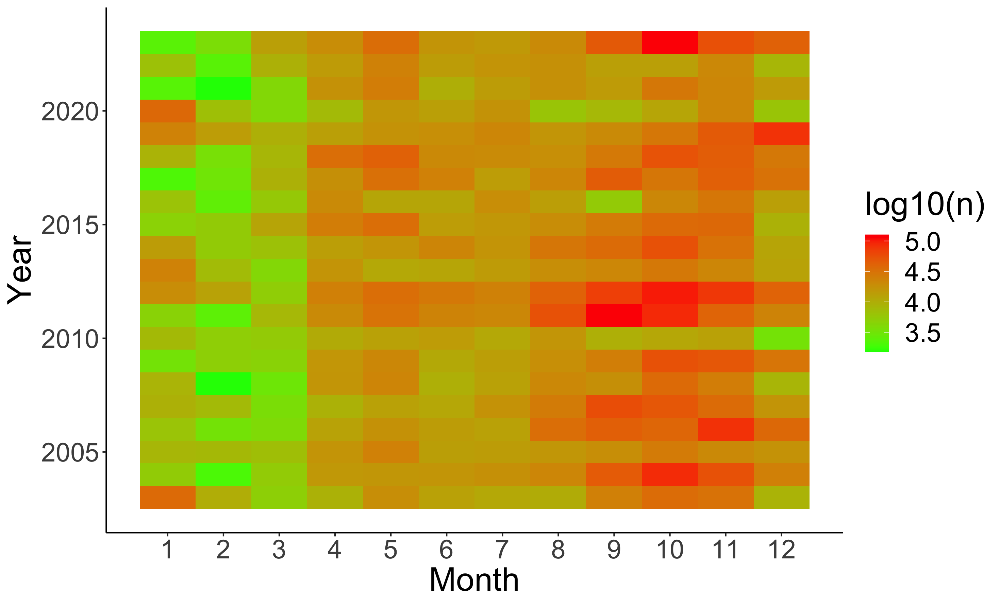
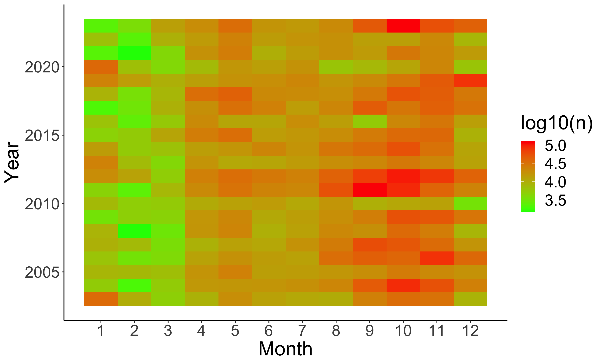

Chapter 1 Wildfires: An introduction
On the evening of November 7, Paradise, California, seemed to be a picture of serenity. The skies were clear, and a crisp chill had settled in, a herald of the approaching winter. Nestled at the base of the Sierra Nevada, the town had been enduring a gradual drop in temperatures, with daily highs lingering below 25C and lows already brushing 5C. The gentle breeze, moving at a mere 6 kilometers per hour, added a refreshing coolness to the air. As the weary residents worn out from their daily grind began to drift into a peaceful slumber, they did so with little apprehension. After all, they were in Paradise.
But as dawn broke the following morning, an insidious shift had occurred. The once pristine skies had taken on a murky, foreboding hue, as if cloaked by a dark, oppressive shroud. The air was thick with an acrid stench, and the town had transformed overnight into a scene of creeping dread. When the residents awoke, they were met with the terrifying sight of a towering column of smoke rising a few miles to the north and ashes fluttering down into their front yards.
By 7:15 a.m., the emergency 911 lines were overwhelmed with frantic calls from anxious residents, only to be told that they were not in immediate danger, as the fire was still some distance away.
But within an hour, the situation had escalated dramatically. A mandatory evacuation order had already been issued for the entire town of Paradise.
The inferno had ignited around 6:30 a.m. due to an equipment malfunction an incident involving the Pacific Gas and Electric Company (PG&E), the largest utility company in America at the time. The blaze, sparked seven miles from town and separated by a deep canyon, was swiftly met with a concerted firefighting effort. But despite the rapid response, the relentless flames continued to spread, consuming over 150,000 acres before they were finally subdued more than two weeks later.
The catastrophic fire had claimed 85 civilian lives, reduced 18,000 structures to ashes, and inflicted damage exceeding 16 billion dollars in 2018 terms (L. Johnson 2022).
That was a wildfire a cataclysmic wildfire.
1.1 What is a wildfire?
A wildfire, also known as a bushfire or forest fire, is a powerful and uncontrolled blaze that occurs in natural environments such as grasslands, shrublands, or forests essentially areas abundant with combustible vegetation. These fires are typically spontaneous and unpredictable, compounded by a complex interplay of natural factors. However, with time, ingenious humans have developed a range of techniques to better understand and manage these events. Advanced technologies, including sophisticated computer simulations and satellite monitoring, have been employed to predict their occurrence and to control their spread more effectively. Despite these advancements, wildfires, left unchecked, have a tendency to expand uncontrollably, driven by factors such as wind, topography, and the availability of fuel. The consequences of such fires can be catastrophic, leading to extensive damage, a significant loss of life, and profound long-term changes to both human communities and natural ecosystems.
It is crucial to distinguish between wildfires and controlled, deliberate burns, commonly known as prescribed burns. Although both types of fires consume combustible vegetation, their purposes and management are fundamentally different. Prescribed burns are intentionally set as a proactive measure to reduce the risk of larger, more destructive wildfires. These controlled burns help manage fuel loads, reduce the likelihood of severe fires, and maintain ecosystem health. We shall explore controlled burning as a strategy for wildfire management in section 3.3.2. In contrast, wildfires occur with or without human intervention and can rapidly escalate into major disasters.
The cover of this book vividly illustrates a wildfire in Central India. This particular fire began at the base of a hill and swiftly climbed upwards, consuming all the available dry vegetation along its path. The image captures the intense and dynamic nature of such fires as they advance through the landscape, highlighting the relentless force of the blaze as it transforms the environment.
With the widespread availability of satellite data, we now have sophisticated tools for detecting, monitoring, and studying wildfires, something that we will discuss later in this book. For now, figure 1.1 showcases the wildfire that devastated the city of Paradise. The images featured in this figure are sourced from the Harmonized Landsat Sentinel-2 (HLS) project, which utilizes a virtual constellation of Landsat 8, Landsat 9, Sentinel-2A, and Sentinel-2B satellites. This integrated dataset offers comprehensive global coverage with a high temporal resolution of every 2 to 3 days, enabling detailed and timely observations of wildfire events.
Figure 1.1: True color composite (TCC) and false color composite (FCC) images of the Camp wildfire that caused wide-spread destruction in Paradise town.
Satellite data can be visualized in two primary ways: true color composites [Figure 1.1a,c,e], which represent scenes as they would appear to the human eye, and false color composites [Figure 1.1b,d,f], which reveal information not visible to the naked eye. For instance, the false color composites in figure 1.1 use short-wave infrared in the red channel, near-infrared in the green channel, and visible green in the blue channel. This approach is based on the fact that ash and char reflect strongly in short-wave infrared wavelengths, while healthy vegetation reflects prominently in near-infrared wavelengths. Consequently, in the false color images, burnt areas appear red, and vegetation appears green. The use of short-wave infrared is particularly advantageous because it can penetrate through smoke, allowing for the clear identification of burnt areas even amidst dense smoke.
Analyzing figure 1.1, we observe several crucial details about the wildfires impact. The pre-fire images (a and b) showcase a landscape rich in vegetation. The mountains are densely covered with greenery, and agricultural fields are prominently displayed as rectangular patches on the elevated terrains and also on the flatter areas. Some agricultural fields are marked in red in the false color composite images, indicating that these were subjected to burning likely as part of a land-clearing process to remove agricultural residues and prepare the soil for new crops. As we will see later in this book, burning of agricultural wastes is an important reason for the initiation of wildfires throughout the world.
The images captured during the fire, dated November 8, 2018, present a dramatic scene. The fires active front and the dense plume of smoke are clearly visible, moving predominantly in a South-West direction. On this particular day, strong winds, reaching speeds of 50 miles per hour, were blowing from the North-East towards the South-West. These intense winds played a critical role in exacerbating the wildfires spread, driving the flames and smoke across the landscape at an accelerated rate. The combination of the fires intensity and the powerful winds significantly influenced the wildfires trajectory and the extent of its devastation. Details of wind movements are discussed in the appendix to this book.
1.2 Distribution of wildfires
Wildfires are common on every continent except Antarctica [Figure 1.2a]. The map is constructed from satellite-derived data provided by NASAs Fire Information for Resource Management System (FIRMS), available at https://firms.modaps.eosdis.nasa.gov/. This comprehensive portal offers both near-real-time and historical fire data, utilizing advanced satellite instruments to monitor fire activity across the globe.
Figure 1.2: Spatial and temporal distribution of fires on Earth in year 2023.
The data is gathered from several key sources: the Moderate Resolution Imaging Spectroradiometer (MODIS) instruments aboard NASAs Aqua and Terra satellites, and the Visible Infrared Imaging Radiometer Suite (VIIRS) on the Suomi National Polar-orbiting Partnership (S-NPP), NOAA-20, and NOAA-21 satellites. These instruments are crucial for fire monitoring due to their ability to capture detailed observations of the Earths surface.
Fire detection is achieved through sophisticated contextual algorithms that analyze radiant energy across various wavelengths (D. K. Davies et al. 2008). These algorithms are designed to detect fires by evaluating the energy coming from the Earths surface towards the satellite. For a fire to be detected, it must release substantial quantities of radiant energy across multiple wavelengths. Additionally, the fire must be brighter than its surrounding pixels to be distinguished from other features. The algorithms incorporate contextual threshold tests to ensure accurate identification, taking into account not just the raw energy levels but also the relative brightness compared to the background, which helps in distinguishing true fire signals from other sources of heat or light. By leveraging these advanced technologies and methodologies, FIRMS provides valuable information that aids in the management and response to wildfire incidents worldwide, enhancing our understanding and ability to address these critical events.
Figure 1.2a reveals that fires are notably rare in extremely cold regions such as Alaska, the northern parts of Canada, Greenland, Tibet, Mongolia, and much of Europe and Asia above 60N latitude. This scarcity can be attributed to the harsh climatic conditions and permafrost in these areas, which result in very low vegetation (and fuel) density, and also inhibit the spread of fires. Similarly, areas below 60S latitude in the Southern hemisphere are covered with water or ice, and do not have fire alerts. Fires are also uncommon in arid regions with limited vegetation, such as the Sahara Desert, the Thar Desert, and the Great Australian Desert. These regions lack sufficient plant matter to fuel fires, resulting in minimal fire activity.
The temporal distribution of fires, as depicted in figure 1.2b, plots the number of fire alerts detected by various satellites over different months of the year. This analysis indicates that fire incidents are recorded throughout the entire year. However, there is a noticeable spike in fire detections during the months of July, August, September, and October. These months consistently show a significantly higher frequency of fire alerts on a global scale, likely due to favorable conditions for fire spread, such as warmer temperatures and dry vegetation, especially in the Northern Hemisphere that has more landmass than the Southern Hemisphere, and so affects any global-level analysis.
The spatial-temporal distribution of fires varies significantly across different regions, in response to the unique environmental and climatic conditions of each area. This variation underscores the importance of understanding local conditions when analyzing fire data. By examining these distributions, we can gain insights into the potential causes and patterns of fire incidents, which is essential for effective fire prevention and management strategies. Additionally, this information helps in prioritizing resources and planning fire-fighting operations more efficiently. Throughout this book, we will delve into the spatio-temporal distributions of fires in greater detail, highlighting their implications for fire management and safety.
1.3 Types and causes of wildfires
Wildfires are classified in various ways based on different criteria. Understanding these classifications is crucial for developing effective fire management strategies and mitigation efforts. Below is an overview of these classifications:
1.3.1 Classification based on the parts of forests consumed by the wildfire
Surface fires: These fires burn vegetation on the forest floor, including fallen leaves, twigs, grasses, debris, and other plant matter. These are common in deciduous forests where trees shed their leaves in drier months to conserve moisture. Surface fires typically burn at lower intensities since dead leaves and other surface materials have lower calorific values. Thus, these fires tend to be less aggressive, slowly moving, and easier to control. Surface fires can play a crucial ecological role by promoting seed germination for certain plant species and eliminating competing vegetation. They can also be extremely devastating for animals that take shelter in the fallen leaves, and for those that reside in the upper layers of soil (Certini et al. 2021).
Ladder fires: These fires start near the ground but spread to vegetation that is elevated above the ground but is below the tree canopy. This material can include vines, climbing plants, fallen branches, bark, shrubs, and small trees. Ladder fires have the potential to escalate wildfires from surface fires to canopy fires by providing a vertical path for flames to reach higher vegetation.
Crown fires: Also known as aerial or canopy fires, these fires consume the uppermost parts of trees, including the canopy, vines, mosses, and epiphytes like orchids. Crown fires spread rapidly, jumping from treetop to treetop. Due to their height and intensity, they often require advanced suppression techniques, such as aerial firefighting with helicopters or heavy-duty pumps. Crown fires can cause extensive damage to wildlife habitats and forests, resulting in significant ecological and economic losses.
Ground fires: Better termed underground fires, these occur in areas with thick layers of organic matter, such as peatlands or locations with substantial leaf litter. Ground fires burn below the surface, making them challenging to detect. Signs of ground fires include heated ground and sudden combustion of snag trees1. These fires often produce a lot of smoke due to incomplete combustion occurring in oxygen-deprived situations.
1.3.2 Classification based on energy released by the wildfire
Low-intensity wildfires: These fires release minimal energy per unit area per unit time. They typically occur in damp or wet conditions, with low fuel density or calorific value, or in cool, still, or insufficient air. Low-intensity wildfires generally have a lesser impact and are depicted as low burn severity areas on burn severity maps. We will discuss burn severity maps in detail in chapter 9. Since they are not highly destructive, these fires are occasionally created, managed, and allowed to burn by natural resource managers. This controlled burning reduces the fuel load in the area, thereby helping to prevent more severe, high-intensity wildfires.
High-intensity wildfires: These fires release substantial amounts of energy per unit area per unit time. They often occur in dry conditions with high fuel density or calorific value, and in windy, hot environments. High-intensity wildfires have a significant impact on the ecosystem and human communities. Wildfire management strives hard to prevent them from happening in the first place, and to control them swiftly should they occur. They are represented as high burn severity areas on burn severity maps.
Moderate-intensity wildfires: These fires release an intermediate amount of energy between low and high-intensity fires. They are depicted as moderate burn severity areas on burn severity maps.
1.3.3 Classification based on location and fuel type
Grass fires are fires that occur in grasslands or prairies, where the primary fuel is grass. These fires can spread rapidly due to the abundance of dry grass, and they often play a role in maintaining the health of grassland ecosystems by promoting the growth of new vegetation and preventing the encroachment of woody plants.
In southern Africa, the term veld fires is used to describe fires that occur in veld, which are open grasslands. Veld fires are crucial for the health of these ecosystems as they help to recycle nutrients back into the soil, control plant growth, and support the survival of various animal species adapted to fire-prone environments.
Bush fires, on the other hand, take place in bushland or scrub areas. These fires typically involve a mix of shrubs and small trees, and their intensity can vary depending on the density of the vegetation. Bush fires are common in many regions and can be a natural part of the ecosystem, helping to clear out old growth and provide space for new plant life to thrive.
Forest fires occur in wooded, forested areas and can be particularly devastating as they consume not only trees but also underbrush and other forest vegetation. These fires can have significant impacts on wildlife habitats, air quality, and soil health. However, they also play a critical role in forest regeneration by clearing out old trees and allowing new growth to take place.
Hill fires are those that occur on hilly or mountainous terrains. The slope of the land can greatly influence fire behavior, making these fires challenging to manage. Inclined slopes can cause fires to spread quickly, and the uneven terrain can complicate efforts to control and extinguish them.
Desert fires occur in desert regions where vegetation is sparse. Although less frequent than fires in more vegetated areas, desert fires can still be significant, impacting the delicate balance of these arid ecosystems and affecting the plants and animals that have adapted to survive in such harsh conditions. Since deserts have scanty vegetation, any further loss of vegetation is especially detrimental to the desert ecosystem. For this reason, desert fires often have very long-term damaging effects.
Peat fires take place in peatlands, which are wetland areas where the fuel consists of accumulated peat, a type of organic soil formed from partially decayed plant material. Peat fires can be particularly challenging to extinguish because they often smolder beneath the surface, leading to prolonged and difficult-to-control burning.
Finally, slash pile fires are fires intentionally set in piles of cut branches, logs, and other debris that result from land clearing or forestry activities. These fires are often used as a method for managing and disposing of surplus vegetation, and while they help clear the land, they need to be carefully managed to prevent them from becoming uncontrolled and spreading to surrounding areas.
1.3.4 Classification based on the origin of wildfire
Natural-origin wildfires: These wildfires start due to natural causes. Common origins include lightning strikes, which can ignite dry vegetation, especially after prolonged dry periods or droughts. Volcanic activity, such as lava flows or hot ash, can also start fires in areas with abundant vegetation. Spontaneous combustion of organic matter, such as decomposing vegetation, can lead to fires, particularly in areas with high organic content. This is often facilitated by highly combustible gases like methane, created during the process of decomposition. Meteorite impacts can also trigger fires through the release of significant amounts of energy. We can note here that any natural-origin wildfire requires a very specific set of uncommon conditions, making them quite rare phenomena. For instance, lightning strikes are often accompanied by rainfall wetting fuels and making them difficult to burn, and volcanism, spontaneous combustion, and meteorite impacts are themselves extremely infrequent occurrences. It is estimated that only around 10 to 30% of all wildfires globally are of natural origin (Robinne and Secretariat 2021).
Human-origin wildfires: The majority of wildfires today around 70 to 90% (Robinne and Secretariat 2021) are caused by human activities, which can be further categorized into intentional and accidental wildfires.
Intentional wildfires: These fires are intentionally set for a range of purposes, each aimed at achieving specific goals. One major reason is clearing of land for agriculture, which includes traditional slash-and-burn techniques as well as massive deforestation for modern industrial agriculture. In the latter case, large areas of forest are cleared to make way for expansive crop fields or pastures, often driven by industrial-scale farming operations.
In some regions, fire is also used to stimulate the growth of new vegetation, which benefits livestock by providing fresh grazing opportunities. Additionally, burns are employed in the collection of forest products, such as berries or medicinal plants, helping clear underbrush and improve accessibility inside forests.
Fires are sometimes employed for more unconventional purposes as well. They may be used to drive animals into traps for hunting or capture, or to conceal evidence of criminal activities such as large-scale fellings. In the digital age, some individuals start fires to create sensational content for social media, seeking attention and engagement. We also have instances of revenge wildfires where offenders initiate fires to strike vengeance or retribution upon government officials. Some communities also have a tradition of creating wildfires as a tribute to Gods for accepting their prayers, especially after a good harvest.
Regardless of intent, these deliberate fires carry substantial risks. If not managed properly, they can quickly spiral out of control, evolving into large-scale wildfires that cause extensive environmental damage, threaten wildlife, and endanger human lives and property.
Accidental wildfires: These fires often result from negligence or unintended causes rather than deliberate actions. Common examples include unattended campfires, which can easily spread when left without supervision. Discarded cigarettes can ignite dry vegetation, leading to wildfires when they are not properly extinguished. Sparks from equipment, such as power lines or chainsaws, are another potential hazard, as these sparks can ignite surrounding materials. We have seen before that the Camp wildfire that caused widespread destruction in Paradise town had started due to an equipment malfunction.
Vehicles, especially ill-maintained ones, may also initiate wildfires if they create sparks or when their hot components come proximate to tall, dry grasses. Fireworks, when used irresponsibly or set off in dry conditions, also pose significant risks of starting fires.
The disposal of debris through burning especially during windy conditions can also result in wildfires, as strong winds can carry embers to new areas and ignite additional fires. This is especially common in modern agricultural practices involving burning crop residues to clear fields. In all these cases, lack of proper precautions and control measures can turn minor incidents into major wildfires, causing extensive damage to the environment, wildlife, and human communities.
1.4 The fire triangle
The fire triangle, also known as the combustion triangle, is a fundamental concept used to understand the conditions necessary for a fire to ignite and sustain itself [Figure 1.3a]. It illustrates that three key elements are required for a fire: fuel, oxygen, and heat. Fuel is any combustible material that can burn, oxygen supports the combustion process, and heat provides the energy needed to start and maintain the fire. If any one of these elements is removed, the fire will be unable to continue and will eventually be extinguished. Understanding this concept is crucial both for preventing, and also for controlling fires effectively.
Figure 1.3: Fire triangles at different spatial and temporal scales.
The first essential condition for fire is fuel, which refers to any material capable of reacting with oxygen (or other chemicals) to release energy. In the context of wildfires, this fuel primarily consists of organic materials such as leaf litter, fallen twigs and branches, soil humus, and various forms of vegetation including trees, vines, and climbing plants. These materials contain chemical energy stored in the form of organic molecules; this energy was originally captured during photosynthesis the process by which plants convert sunlight into chemical energy. When the fuel burns, it releases this stored energy in the form of heat and light. The burning process occurs in three stages:
Preheating phase: During this initial stage, the unburnt fuel is heated, leading to the release of ignitable vapors through processes such as dry distillation involving thermolysis2, pyrolysis3, and cracking4. As the temperature rises, it reaches the flash point of the fuel, the lowest temperature at which ignitable vapors are emitted in sufficient quantities to form a flammable mixture with air. The temperature then climbs to the fire point, also known as the combustion point, where the vapors continue to burn for several seconds after ignition.
Gaseous or distillation phase: In this stage, the ignitable vapor-air mixture burns after reaching its combustion point, resulting in a significant release of heat and light. Flames are typically visible as the gas mixture burns. The generated heat spreads to nearby materials through conduction, convection, and radiation, bringing them to their preheating phase and priming them to ignite. This creates a chain reaction that allows the fire to persist and spread.
Charcoal or solid phase: As fire progresses, the release of ignitable gases diminishes, and flames become less prominent. The remaining fuel is reduced to charred remains, which consist of carbon and unburned minerals. This char continues to burn in a slow, flameless combustion process known as smoldering. Smoldering produces high temperatures and can persist for an extended period, as the process is slow and the generated heat is retained within the char.
The second condition necessary for combustion is oxygen. Oxygen acts as an oxidizing agent in the combustion reaction. This gas constitutes about 21% of the Earths atmosphere in mole fraction, and around 23% of the Earths atmosphere in mass fraction. Most atmospheric oxygen is produced by plants through photosynthesis, a process summarized by the chemical equation:
\[ 6CO_2 + 6H_2O \rightarrow C_6H_{12}O_6 + 6O_2 \]
While other substances like halogens (e.g., fluorine, chlorine), ozone, and sulfur oxides can also serve as oxidizing agents, oxygen is by far the most common and vital for wildfires.
The third condition is heat, which provides the activation energy required to initiate the combustion reaction. Since combustion is an exothermic process (releasing heat), once the reaction begins, it can sustain itself and even accelerate. This self-perpetuating process can lead to a chain reaction, where the heat generated from the initial combustion ignites additional fuel, causing the fire to spread.
Understanding the fire triangle fuel, oxygen, and heat provides crucial insights for fire control strategies. Since all three conditions are necessary for a fire to burn, removing any one of them can effectively extinguish a fire. For example, fire lines are created by clearing a strip of vegetation to remove fuel, preventing the fire from spreading beyond this break. In smaller fires, such as kitchen fires, using fire blankets, sand, or carbon dioxide can cut off the oxygen supply and extinguish the flames.
Reducing the temperature by dousing fires with water is another widely used technique, which is why fire hydrants are installed in cities to provide a ready supply of pressurized water for firefighting.
In addition to the classic fire triangle, we can also consider the wildfire triangle [Figure 1.3b] and the fire regime triangle [Figure 1.3c] at broader spatial and temporal scales (Moritz et al. 2005).
At the scale of wildfires, factors such as the fuel load, weather conditions, and topography play significant roles. For instance, hot and dry conditions can make fuels more susceptible to ignition, while wind can intensify an already burning fire. Topography influences fire behavior as well fires on hilly terrains can spread rapidly with flames rising up, and also through convection currents and slope-driven winds can exacerbate wildfires, as we saw in the case of the Camp wildfire.
Fire regimes analyze the broader patterns and characteristics of fires over large areas and extended time periods [Figure 1.3c]. This includes studying the frequency, intensity, and impact of wildfires on ecosystems. Fire regimes are assessed at scales of hundreds of square kilometers and several decades, focusing on vegetation types and climate patterns. Vegetation types can include species that depend on fire for their life cycles, and climate encompasses long-term averages of temperature, precipitation, and wind patterns occurring in the area.
These scales are interconnected, as illustrated by the curved arrows in figure 1.3d.Small fires can evolve into larger wildfires, and large wildfires can create numerous spot fires in their vicinity. Frequent wildfires can alter species composition, favoring fire-resistant or fire-dependent species, thereby changing the long-term fire regime of an area. Conversely, the prevailing fire regime influences the likelihood of wildfires at smaller scales, shaping fire behavior over time.
1.5 Trends in wildfires
Wildfire trends exhibit considerable variability depending on the region and time period under consideration. In the United States, the area burned by wildfires has shown a significant upward trend over the years [Figure 1.4a]. During the 1980s, approximately 2.5 million acres were burnt annually. In contrast, recent years have seen this number swell to between 5 million and 10 million acres per year. Additionally, data reveal fluctuations over time, with periods of increased burning often followed by lulls. This pattern is anticipated because wildfires consume the available fuel load primarily vegetation in forested areas. After large fires, it takes time for the vegetation to recover and reach pre-fire levels, which can lead to temporary decreases in the frequency and intensity of wildfires till the fuel load builds up again.
 



Figure 1.4: Trends in fire and forest cover.
The availability of satellite-based fire detection technologies has significantly improved our ability to collect and analyze wildfire data, enabling detailed examinations of fire patterns. However, it is important to recognize that satellites detect fires in various landscapes, not just in forest or bushland areas. Therefore, the fire data may also include fires in non-forest areas. Despite this, the extensive data we now have allows us to discern several key trends.
For example, when plotting fire alerts from the MODIS sensor as a heat map [Figure 1.4b], we see that Australia experiences the highest number of fire alerts during September, October, and November. In contrast, January, February, and March typically see fewer fires. Data for March over the years also reveals a trend earlier years show more green shades, indicating fewer fire alerts, while recent years show more red shades, indicating an increase in fire alerts over time. Additionally, there is a noticeable variability in the data; for instance, September 2016 had unusually low fire alerts, while December 2019 had exceptionally high numbers. This variability highlights the need for such wildfire management plans that can account for these fluctuations, or in other words, adaptive management plans.
In examining yearly fire alerts in Australia [Figure 1.4c], the trends differ significantly from those observed in the United States [Figure 1.4a]. Australian data does not show a clear upward trend but rather a zig-zag pattern. After several years of high fire activity, there is often a period of lower fire alerts, followed by a resurgence. For example, 2008 had fewer fire alerts, partly due to greater fires in the previous years and also due to above-average rainfall that reduced fire risk. However, increased rainfall also stimulates vegetation growth, which can lead to higher fire risks in subsequent years. This was evident in 2009 when Victoria, having experienced few fires in 2008, faced severe wildfires during the Black Saturday bushfires, which ravaged 1.1 million acres and resulted in 173 fatalities (Cameron et al. 2009).
In 2010, there was an exceptionally low number of fire alerts [Figure 1.4c], due to effective prevention measures and a strong La Nia effect, which brought abundant rainfall and flooding to Queensland and Victoria. However, the following years again saw an increase in fire alerts as conditions became favorable for burning the accumulated vegetation.
Another trend is the decrease in global savanna area burnt [Figure 1.4d]. Savanna areas refer to landscapes where grasslands dominate, interspersed with scattered trees. These regions typically experience a warm climate with seasonal rainfall, allowing for rich biodiversity and unique ecosystems. Savannas are crucial for various animal species and often serve as important grazing grounds. Before 2005, over 170 million hectares of savanna were burnt annually, but current estimates are below 140 million hectares.
This decline is partly due to improved forecasting and management practices. But the trend is also reflective of a reduction in global savanna areas. In regions like Australia, savannas are being converted into grasslands for livestock grazing (Hoffmann and Jackson 2000). Conversely, in many African countries, tree planting is converting savannas into woodlands (Armstrong et al. 1998; Parr, Te Beest, and Stevens 2024). Both of these conversions have been leading to a reduction in the total savanna area.
In this way, what we observe in savanna fire trends is not just a reduction in fires due to better management, but also a transformation of savannas into other land uses often due to poor management of resources, or poor protection of existing savanna areas permitting encroachment and conversion to other land uses, or both (Jepson 2005). While the first reason is a cause of hope and joy, the second paints a dismal picture and necessitates urgent, extensive, and concerted efforts if natural ecosystems are to be preserved.
In causal inference studies, it is crucial to consider confounding variables that may obscure the true relationship between variables through spurious correlations. When we observe a decrease in wildfire incidents, this might be misinterpreted as a sign of improved fire management, when in reality, it could be due to reduced forest cover. Figure 1.4e shows a decline in forest cover across many countries. As forest areas shrink, the number of fire alerts may also decrease, which could misleadingly suggest that fire management practices are more effective than they actually are. The reduction in forest cover can be due to various factors, including deforestation for agriculture and urban development. Hence, a comprehensive examination of confounding variables is essential to accurately assess fire management strategies and ensure that the interventions taken are genuinely effective not merely a response to reduced forest availability.
Fire trends also emanate from policy differences. Sharp boundaries in fire signatures, such as those captured by the VIIRS sensor in November 2023 near the India-Pakistan border [Figure 1.4f], reveal striking differences in fire activity across artificial boundaries. From the figure, we can observe that the province of Punjab in India shows a significantly higher density of fire signatures compared to its neighboring province in Pakistan. Despite these areas having a similar geography, shared culture and history even to the extent of having a common name Punjab, there is a marked difference in fires. This can be traced to man-made factors and differences in government policies on the two sides of the international border.
In India, the Punjab Preservation of Subsoil Water Act 2009 (PPSW Act 2009) was introduced to combat groundwater depletion, which had been exacerbated by resource-intensive agricultural practices. The regions intense agricultural activities, particularly paddy cultivation, had significantly strained groundwater resources, and the water table was going down year after year [Figure 1.4g]. To mitigate this, the Act regulated the timing of paddy planting, aiming to reduce groundwater extraction by aligning crop sowing with the monsoon season.
However, this policy also had several unintended consequences. The delay in planting paddy resulted in a delay in harvesting paddy. This means that the accumulated crop residues have to be cleared in a very short period of time to clear fields in preparation for the next planting season. To accomplish this, farmers have increasingly resorted to burning crop residues as a quick and cost-effective solution to clear their fields. It is this increase in burning that is clearly reflected in the satellite data. Fire signatures have been going up and moving towards the end of the year [Figure 1.4hi]. In contrast, Pakistan, which does not have similar regulations, allows farmers more flexibility and time to manage their crop residues, and we observe fewer fire alerts in Pakistan. This example illustrates how policy changes can directly impact fire activity and its distribution, revealing a complex interaction between policies, local practices, and environmental protection.
1.6 Wildfires and society
Wildfires have deeply influenced human societies throughout history, shaping our evolution (Glikson 2013) and they continue to impact our modern lives even today. The earliest sources of fire for humans were likely wildfires, and they likely played a pivotal role in early human development (Gowlett 2016). Early humans would have encountered and harnessed fire from natural wildfires, using it for cooking, protection, and hunting. This initial interaction with fire was crucial for survival and led to significant advancements in human society. Over time, managing and controlling fire became integral to human adaptation, influencing cultural practices, land use, and community structures.
The impacts of wildfires are extensive and interconnected even today, affecting economic, public health, and environmental domains. Economically, wildfires result in substantial costs, including firefighting efforts, property damage, and loss of natural resources, with additional indirect costs such as business disruptions and decline in tourism. Public health is severely impacted by wildfire smoke, which contains harmful pollutants that exacerbate respiratory conditions like asthma and chronic obstructive pulmonary disease (COPD), as well as by the stress associated with evacuations. Environmentally, wildfires alter landscapes, destroy habitats, contribute to soil erosion, and degrade water quality, while also negatively affecting biodiversity and disrupting ecological balance. These combined effects underscore the need for comprehensive wildfire management strategies that address their broad-ranging consequences. The next chapter will delve deeper into the various effects of wildfires.
Wildfire management has been undertaken since antiquity by societies to counter and abate the destructive and detrimental consequences of wildfires. The repertoire of traditional knowledge from indigenous and native societies provides us with several valuable insights into effective wildfire management. For instance, Aboriginal Australians use cultural burning to manage vegetation, reduce fuel loads, and support ecosystem health. Similarly, Native American tribes employ controlled burns to maintain forest ecosystems and foster species dependent on fire. Integrating these traditional practices with modern fire management techniques offers a more holistic approach to addressing wildfire challenges through the incorporation of time-tested methods.
At the same time, we need to keep evolving our methods. To address the increasing frequency and intensity of wildfires due to climate change, and also because of increasing man-made causes modern society must adapt by developing fire-resistant infrastructure and implementing proactive fire-management strategies. Advances in construction materials, fire-resistant landscaping, and strategic community planning are essential for enhancing resilience against fires. Public education on fire risks, evacuation procedures, and creating defensible spaces around homes is also crucial. By combining modern techniques with traditional practices and investing in resilient infrastructure, societies can better manage the challenges posed by wildfires and continue to adapt and thrive in the face of their persistent influence.
References
Snag trees are dead or dying trees, extremely important for wildlife as nesting sites.
Thermolysis is the breakdown of molecules by the action of heat.
Pyrolysis is decomposition brought about by high temperatures.
Cracking is the process of breaking down of complex organic molecules into simpler molecules by the breakage of carbon-carbon bonds.